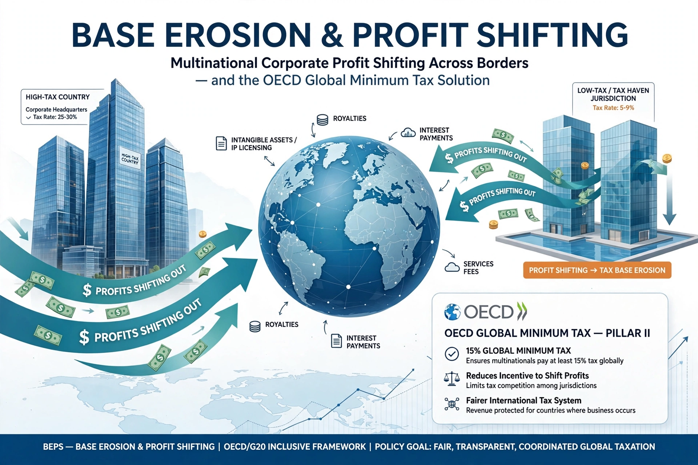

Base erosion and profit shifting (BEPS) refers to corporate tax planning strategies used by multinationals to shift profits from higher-tax jurisdictions to lower- or no-tax jurisdictions, thus eroding the tax base of the higher-tax jurisdictions.

The OECD/G20 BEPS Project, launched in 2013, produced 15 Actions in 2015 covering transfer pricing, treaty abuse, country-by-country reporting and harmful tax practices. BEPS 2.0 added the global minimum tax (Pillar Two, 15%) agreed by over 135 jurisdictions in 2021.